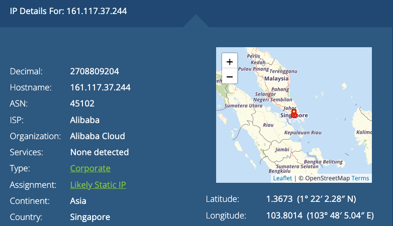

数据中心IP是由互联网服务提供商（ISP）分配给数据中心或托管服务提供商，并用于服务器或网络设备等专业设备连接到互联网上。这些IP地址通常是静态的，因为它们被分配给一组特定的设备并且不可更改。此外，由于数据中心需要处理的大量数据流量，数据中心IP通常具有高速的带宽和较低的延迟。
另一方面，住宅IP是指由ISP分配给个人用户的IP地址，用于将个人设备（如电脑、手机、平板电脑等）连接到公共互联网上。 这些IP地址可以是静态的（固定不变）或动态的（每次重新启动路由器时会产生新的IP地址）。 由于住宅IP主要用于一般的上网和电子邮件等轻量级应用程序，所以其带宽和延迟通常都较低。 此外，ISP可能会限制住宅IP的使用，例如限制同时连接的设备数量和上传/下载速度。
数据中心IP VS 住宅IP
在搭建网络环境时，经常会听到别人提到数据中心IP与住宅IP，那么到底有什么区别，各有什么用途，我们该如何选择，来看下文章详细介绍。
数据中心IP：来自二级公司的IP地址，通常由云服务器供应商提供。
住宅IP：来自标准互联网服务提供商(ISP)的IP地址，通常是DSL或电缆，依附于一个现实的地理位置。
IP地址是指互联网协议地址，用于识别每个设备在网络中的唯一位置。由于不同类型的IP地址具有不同的功能和属性，因此数据中心IP和住宅IP之间存在许多区别。
分配方式：
数据中心IP通常由互联网服务提供商（ISP）或数据中心提供商分配。这些IP地址可以是静态IP地址（即不会随时间变化），以确保服务器和应用程序在任何时候都能够从特定的IP地址访问。相比之下，住宅IP地址通常是动态IP地址（即可能变化），由ISP为每个用户自动分配一个临时IP地址。
速度和延迟：
数据中心IP通常设置在高速网络环境下，以支持大量的数据流量和实时交互。这允许数据中心IP提供更快的下载和上传速度以及更低的延迟。相比之下，住宅IP速度和延迟取决于用户的网络服务计划、设备、位置和连接质量等因素。住宅IP的网络带宽和响应速度通常较低，会限制一些在线操作，例如视频流媒体或在线游戏。


IP地址共享：
住宅IP地址通常是与其他家庭或公司共享的。这意味着同一网络上的多个设备都将共享相同的IP地址和带宽，这可能会导致性能下降。相比之下，数据中心IP通常是专用的、仅限于单个客户或应用程序使用的，从而支持更高效的数据传输和网络响应。
安全性：
由于数据中心IP通常用于托管敏感信息和业务应用程序，因此需要进行加密和其他安全性措施。这包括身份验证、访问控制、数据加密等。相比之下，住宅IP通常没有像数据中心IP那样的高度安全性要求，但仍然需要遵循一些最佳实践，例如路由器密码的定期更改、网络防火墙的设置等。
故障转移：
数据中心IP通常具有灵活的故障转移机制，以确保服务器或服务可在发生故障时继续工作。这包括集群、负载均衡、容错等。相比之下，住宅IP通常没有这种强大的故障转移功能，用户需要自己解决问题。
综上所述，数据中心IP和住宅IP之间的区别涉及到分配方式、速度和延迟、IP地址共享、安全性和故障转移等多个方面。了解这些区别可以帮助用户更好地理解不同类型的IP地址，从而更好地选择适合自己的网络服务计划和应用程序。
什么是数据中心IP？
数据中心IP是指由数据中心提供商或互联网服务提供商（ISP）分配的静态IP地址，用于托管网络服务器、应用程序和存储等设施。数据中心IP通常是专用的，只限于单个客户或应用程序使用，因此可以确保服务器在任何时候都能够从特定的IP地址访问。这对于需要快速、可靠且高效的数据传输和网络响应的业务，如电子商务、在线游戏、视频流媒体等非常重要。数据中心IP也通常被认为是更安全的，因为数据中心提供商通常会实施一系列安全措施，如身份验证、数据加密、访问控制等。
如图所示，我们以数据中心的IP：161.117.37.244为例，然后可以通过访问这个网站 https://whatismyipaddress.com/ 查询IP地址信息，可以看到以下内容:

数据中心代理就是从数据中心服务器上的数据中心IP子网创建的代理。基本而言，是通过Alibaba Cloud、Amazon Cloud、Ucloud、Vultr或Digital Ocean等服务器提供商创建的代理。

数据中心代理的概念是把代理托管在数据中心的专用服务器上，让专用服务器充当我们的计算机和服务器目标之间的中介。
什么是住宅IP？
住宅IP指的是互联网服务提供商（ISP）为家庭用户提供的互联网接入方式。使用住宅IP，用户可以通过广域网（如公共互联网）访问互联网，并且通常会被动态分配一个IP地址。
通常情况下，住宅IP会采用动态IP地址，这意味着每次重新连接互联网时，用户的IP地址都可能会发生变化。相对于固定IP地址，动态IP地址不仅更加适合家庭用户，也能够更好地实现IP资源的利用与管理。
需要注意的是，住宅IP通常并不适合用于服务器等需要稳定且高速带宽的应用场景。此外，因为住宅IP被多个用户共享，所以网络安全方面也需要特别关注。
比较住宅IP和数据中心ip优势
住宅IP和数据中心IP是两种不同类型的IP地址，它们各自有不同的优势和应用场景。
住宅IP的优势：
1、住宅IP价格相对较便宜，适合家庭或个人用户。
2、使用住宅IP免费获得的IP地址通常是动态分配的，可以更好地实现IP资源的利用和管理。
3、由于住宅IP地址是由互联网服务提供商（ISP）提供和管理的，因此ISP通常会根据实际需求为用户提供更好的网络连接和技术支持。

数据中心IP的优势：
1、数据中心IP具有更高的带宽和更稳定的连接速度，适用于需要大流量和高速连接的应用场景。
2、数据中心IP通常都是静态IP地址，可以方便地进行远程访问、服务器搭建等操作，并且也适合用于Web应用、数据库服务器、游戏服务器等需要稳定IP地址的应用场景。
3、数据中心IP相对来说比较安全，因为其存在于封闭的数据中心网络中，相对于住宅IP而言会受到更少的攻击和威胁。
在选择住宅IP和数据中心IP之前，需要根据实际需求和应用场景进行综合考虑和选择。
数据中心ip更适合哪些应用？
数据中心IP通常适合需要高速、高稳定性的应用，例如：
1、网站或应用程序：对于需要快速加载和响应的网站或应用程序，数据中心IP能够提供更快的访问速度和更高的可靠性，从而提升用户体验。
2、游戏服务器：游戏服务器需要高速、低延迟的网络连接，以确保玩家之间的互动不会受到干扰。数据中心IP能够提供优化的网络环境和专业的游戏服务器设备，从而满足游戏服务器的需求。
3、大规模数据处理：对于需要处理大量数据且需要高速和可靠连接的任务，如人工智能和机器学习等应用场景，数据中心IP可以提供高效的网络带宽和低延迟连接，从而提高任务处理的效率。
总之，数据中心IP适合需要高速、高稳定性网络连接的应用，但也需要考虑成本因素，根据实际情况选择最合适的方案。
住宅IP更适合哪些应用？
住宅IP通常适合一些较为普通的网络应用，例如：
1、日常上网：住宅IP足以支持日常上网、浏览网页、发送电子邮件、观看视频等基本网络任务。
2、家庭办公：对于需要从家里远程工作或上课的人员，住宅IP可以提供足够的带宽和稳定性，满足办公和学习所需的基本网络连接要求。
3、个人网站或博客：如果你在住宅内需要搭建一个个人网站或博客，住宅IP也足以支持这种小规模的应用。
需要注意的是，住宅IP的速度和可靠性可能不如数据中心IP，因此如果应用需要更高的稳定性和更快的速度，推荐使用数据中心IP。同时，在使用住宅IP时也需要遵循当地相关法规和网络服务商的规定。
住宅IP和数据中心ip那个速度更快？
通常情况下，数据中心IP的速度会比住宅IP更快。这是因为数据中心通常部署在优化的网络环境中，具有更高的带宽和更稳定的连接速度，同时也采用了更先进的网络设备和技术，如负载均衡、CDN加速等。而住宅IP则存在于公共的互联网服务商网络中，其速度受到多方面因素的影响，如网络拥堵、设备性能等，可能会出现波动和不稳定的情况。当然，具体速度还需要根据具体情况来评估，不能一概而论。